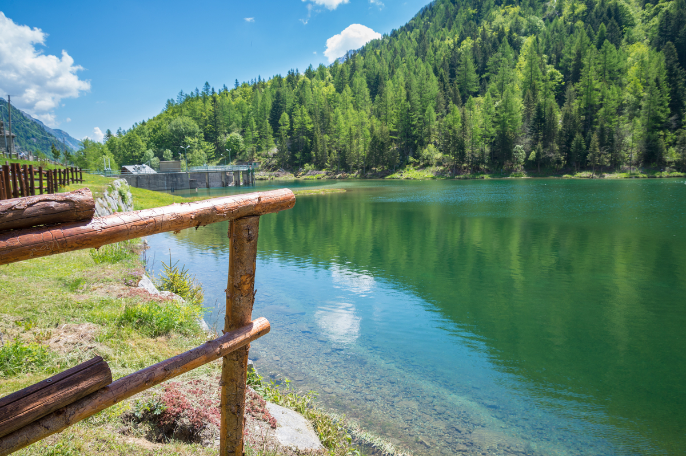
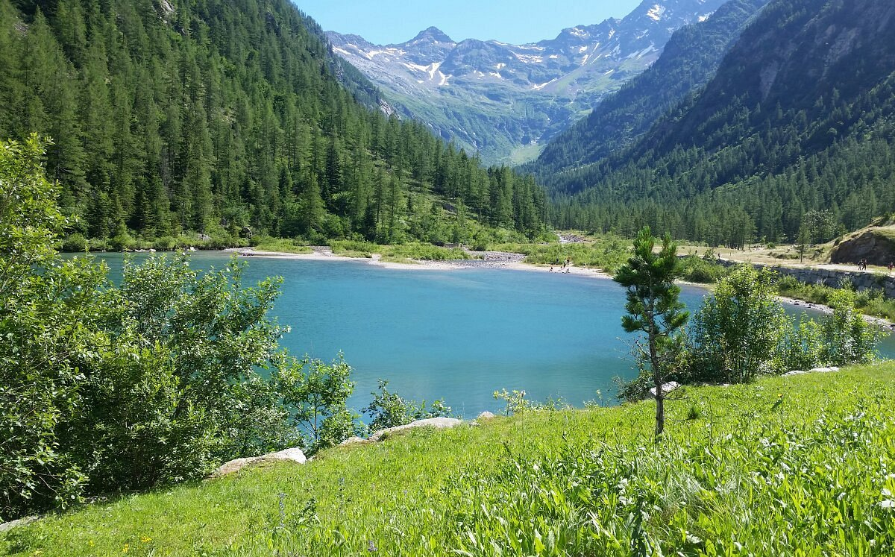

Il Lago delle Fate è uno dei luoghi più suggestivi della Val Quarazza, una valle laterale che si apre poco sopra Macugnaga, ai piedi dell’imponente parete est del Monte Rosa. Il lago colpisce subito per il suo colore verde smeraldo, che cambia tonalità a seconda della luce e delle stagioni, creando riflessi quasi irreali. La sua atmosfera è silenziosa, raccolta, e invita immediatamente a rallentare il passo.
Sebbene oggi appaia perfettamente integrato nel paesaggio alpino, il Lago delle Fate è in realtà un bacino artificiale, nato dopo la costruzione di una piccola diga sul torrente Quarazza. La creazione dell’invaso ha modificato la morfologia della valle, sommergendo parte dell’antico villaggio di Quarazza. Alcune testimonianze del passato, come la chiesetta e pochi ruderi, emergono ancora tra la vegetazione e raccontano una storia fatta di lavoro, fatica e vita di montagna.

La valle che ospita il lago è profondamente legata alla cultura Walser, una popolazione di origine alemanna che ha colonizzato queste zone secoli fa. Le loro case in legno e pietra, i tetti pesanti, i fienili e le tradizioni ancora vive nei borghi di Macugnaga rendono l’intera area un piccolo museo a cielo aperto. Camminare verso il lago significa anche attraversare un paesaggio culturale unico, dove natura e storia convivono in equilibrio.
Uno degli elementi che più affascinano i visitatori è la leggenda che dà il nome al lago. Si narra che un tempo le fate abitassero la valle e proteggessero i minatori che lavoravano nelle gallerie d’oro. L’avidità di alcuni uomini avrebbe però spezzato l’armonia con il mondo magico, causando la scomparsa delle fate. Le loro lacrime, cadute nella conca, avrebbero formato il lago. Questa storia, tramandata in molte varianti, aggiunge un velo di mistero e poesia al luogo.
Raggiungere il Lago delle Fate è semplice e alla portata di tutti. Il percorso più comune parte dalla frazione di Isella e segue una strada sterrata quasi pianeggiante, immersa nei boschi, che in circa mezz’ora conduce alle sue rive. Chi desidera un itinerario più ricco di scorci panoramici può invece partire dal centro di Macugnaga e seguire il Grande Sentiero Walser, un tracciato che attraversa antiche mulattiere, ruscelli e radure.

Una volta arrivati, il lago offre un ambiente perfetto per una pausa tranquilla. Le sue sponde sono costellate di piccoli prati e zone ombreggiate dove sedersi, leggere o semplicemente osservare il paesaggio. Non è un luogo balneabile, ma è ideale per chi ama la fotografia, per le famiglie con bambini e per chi cerca un angolo di natura facilmente raggiungibile. Da qui partono anche sentieri che conducono verso l’Alpe Cortenero o verso la suggestiva “città morta” di Crocette, un antico villaggio di minatori abbandonato.
Il Lago delle Fate è quindi molto più di una semplice meta escursionistica: è un luogo dove si intrecciano natura, memoria, leggende e cultura alpina. Ogni visita regala un’atmosfera diversa, che sia la luce dorata del mattino, il silenzio ovattato dell’autunno o il verde intenso dell’estate. È uno di quei posti che rimangono nella mente per la loro semplicità e per la sensazione di pace che riescono a trasmettere.
Torna alla pagina principale